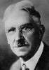

Philosophy Pages
| Dictionary | Study Guide | Logic | F A Q s | ||
|---|---|---|---|---|---|---|
| History | Timeline | Philosophers | Locke | |||
| Philosophy Pages
| Dictionary | Study Guide | Logic | F A Q s | ||
|---|---|---|---|---|---|---|
| History | Timeline | Philosophers | Locke | |||
For the next generation of American philosophers, the pragmatism of Peirce and James became a powerful tool for understanding logical inquiry and improving the quality of human life.
|

Dewey Life and Works . . Knowledge . . Morality Bibliography Internet Sources |
After studying with Peirce at Johns Hopkins, John Dewey pursued a lengthy academic career, expounding pragmatic principles in professional philosophical journals and promoting their application to social and educational settings. From the outset, he denied that there is any significant metaphysical distinction between mind and body. As "The Unit of Behavior (The Reflex Arc Concept in Psychology)" (1896) made clear, Dewey supposed that human awareness and action occur as indistinguishable elements within a coherent experience. In any adequate analysis, what we know is just what we do. Thus, as Dewey noted in "The Practical Character of Reality" (1908), the order of the natural world itself necessarily includes our interaction with it through scientific investigation. What the world is depends upon what we do with it.
The pattern of our thought about the world is explicitly described in Logic: The Theory of Inquiry (1938). There, Dewey identifies a six-step process that includes:
Dewey's moral philosophy was thoroughly naturalistic in its vigorous rejection of the traditional dichotomy between fact and value. Human conduct—like every other aspect of experience—is susceptible to the same pattern of thought, as Dewey argued in Logical Conditions of a Scientific Treatment of Morality (1903). Thus, in "The Construction of Good" (1929) Dewey argued that ethical and aesthetic choices are properly addressed as practical, scientific issues.
Judgments about values are judgments about the conditions and the results of experienced objects; judgments about that which should regulate the formation of our desires, affections, and enjoyments.This, Dewey believed, completes the great work of empiricism. An experimental approach to moral decision making promises: to secure a proper regard for the future practical consequences of our actions; to reduce the dangerous influence of subjective egoism; and to encourage adoption of a reasonable, modest fallibilism with respect to our moral precepts.
Dewey's application of pragmatic principles to educational and social contexts is expressed in
Democracy and Education (1916).
Dewey's friend and colleague George Herbert Mead placed even greater emphasis on the application of pragmatic philosophy to human society. He argued in Social Consciousness and the Consciousness of Meaning" (1910) that social acts are the irreducible units of all human experience. This social behaviorism became even more explicit in The Social Self (1913), where Mead proposed that an adequate understanding of the self or person invariably requires consideration of its overt relations with other selves.
Also in Chicago, Jane Addams put pragmatism to work in vigorous public activities on behalf of social justice.
Twenty Years at Hull House (1912), and Women, War, and Suffrage (1915) describes in detail her efforts to provide basic social services for the disadvantaged.
She also participated in the campaign to secure women's suffrage in the United States.
[Why Women Should Vote (1915)]
A Nobel Peace Prize laureate, Addams was a vocal pacifist, whose
Democracy or Militarism (1899) and
Newer Ideals of Peace (1907) offer reasoned defences of the potential social and economic value of world peace.
| History of Philosophy | |||||||
|---|---|---|---|---|---|---|---|
| Previous | Next | ||||||